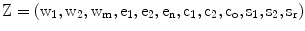
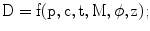
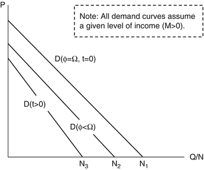
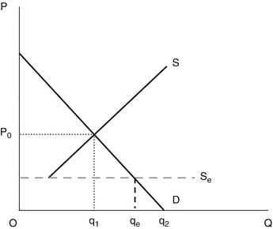
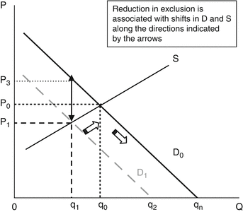
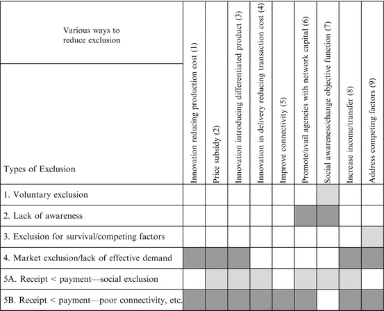

3.1 Introduction1
Literature on the ‘economics of exclusion’ typically addresses competition and the anti-trust laws of developed economies, not the ‘exclusion’ that development practitioners are concerned about. When economists do engage in the discourse on exclusion in development, they typically deal with poverty and deprivation without always applying the basic analytical tools available in economics (Sen 2000; Osmani 2003). In this chapter I make an effort to reconstruct the definition of exclusion and its various facets by applying a set of principles that underlie economic analyses. Though poverty is not directly dealt with in this paper, it is hoped that a concept of exclusion defined within the allegedly ‘narrow’ construct of economics can be ‘broad’ enough to encompass real deprivation, and provide additional insight into our understanding of the marginality that underlies the poverty observed in society.
Concern with exclusion surfaces in several domains of knowledge and related discourse appears fragmented, with little meaningful exchange across disciplines. A more comprehensive understanding of exclusion can be achieved by applying the basic principles of investigation common to various disciplines within economics and the social sciences. In the first part of this paper I take a cue from a critique of approaches in economics by orienting the discussion on ‘goods and services’ within the broader canvass of ‘contracts.’2 In such a setting, I define exclusion as the ‘exclusion of an agent from the set of all viable contracts in a given sphere.’
There has been an accumulation of rich experiences from development endeavors that have dealt with targeted programs, where the target populations were often ‘excluded’ groups. Some experiences suggest that there is a plethora of programs that suffer from inadequate planning; and there are programs that work for one segment of a target group but fail to reach others. Attempts to identify target groups and transfer resources or services to them via ‘out-of-system’ approaches have often fostered local divisiveness instead of leading to the desired reconfiguration of the social groups and reduced exclusion. In order to take the discourse ahead for formulating meaningful applicable measures there is a need to find common language, to reconstruct our ideas around ‘exclusion’ and to reconstruct the observed phenomena and draw inferences from a ‘model-dependent reality’ (in a comparative static setting) to guide possible actions.
In the first part of the paper I focus on the reconstruction of basic concepts, and in the second part I extend the analysis to classify exclusion, illustrated in the context of a service market and conceptualized with supply and demand tools. The exercise provides an opportunity to identify various options for reducing exclusion that have obvious linkages to familiar development programs and policies. The latter reveals that many initiatives to reduce exclusion under the umbrella of safety nets often lead to the introduction of differentiated products in segmented markets that may actually contribute towards perpetuating differentiations within a population. It is hoped that the proposed approach will improve the ability to design programs that effectively reduce exclusion (and poverty) as well as to evaluate program performance.3
3.2 Conceptual Issues
3.2.1 Exclusion is Not Insurmountable: Rationale for the Undertaking
In all development endeavors over the last two decades or more, either in the guise of Poverty Reduction Strategy (PRS) and Millennium Development Goals (MDGs) or in initiatives to achieve greater equity and foster inclusive growth, the general concern was one of reaching out to those who are ‘left out.’ Earlier concern with those who are ‘left-out’ receiving benefits from economic growth or those adversely affected by growth processes, gradually shaped pre-defined social and economic groups.4 Thus ‘left outs’ could be children not being sent to schools by their parents, poor rural women unable to avail themselves of health services or market opportunities, people from minority or socially outcast groups who have little or no access to jobs and public amenities, and the physically or mentally disabled. I refer to these people or social groups as ‘excluded,’ and to the broader subject of study as ‘exclusion.’
There are numerous programs under governments, the private sector, or NGOs, to reduce exclusion, some of which are associated with poverty reduction. The fact that these programs are often designed based on the assumption that the target groups were ‘excluded’ from regular service delivery networks and may become ‘included’ through specially designed programs, implies that ‘exclusion’ may be overcome. There are ample claims of program success, implying the achievement of ‘inclusion’ of individuals and groups that were formerly ‘excluded.’ Acceptance of such rationale renders exclusion less rigid than the perception that exclusion is rooted in the static (or slowly changing) framework of culture. This inference from development practices provides the key entry point to the reformulation of the analytics within a ‘model-dependent realism.’5 Given an initial equilibrium setting, exclusion is defined and programs to reduce exclusion are identified by applying comparative static economic analyses.
3.2.2 Fragmented Perspective: Reflections on Trends in Knowledge Domain
Some question the relevance of abstract economic theory and consider this realm as too narrow to apply to broader issues. Some advocate a pluralist pedagogy to expose students “to the competing currents of economic thought, e.g., classical, neoclassical, Keynesian, Marxian and institutionalist” (Stilwell 2006). Development practices have also found inroads into pluralist curricula, with gender, the environment, and poverty analysis being some of the important ones. All of these are considered means of making students aware of the different ways of looking at economic processes, problems, and policies. While diversity opens doors to fresh ideas, our failure to enrich the core elements of unity often leads to fragmented views, and this may often lead to divisiveness.6 In a small way the current exercise on exclusion returns to the basics of economics rooted in early political philosophy and reconstructs the analytics of an overriding concern of development practitioners with the hope that some guidelines for action may be derived. The search for common unity is justified because ‘exclusion’ is being articulated among diverse disciplines that lack adequate means of communication for broader discussion.
3.2.3 Taking a Step Back—A Note on Core Economic Principles
Engaging in a detailed assessment of the various perspectives on economics involves the challenging tasks of addressing multiple fields of epistemology and the history of economic thought, and their roots in early (post European Renaissance) political philosophy and economic theory of various ideologies. I use a set of principles below that constitute the core of economics.7 These principles are similar to those embedded in methods that are deemed necessary for knowledge building in other fields of social science.
1.
A basic analytical category or entity called an ‘agent’ is used to represent entities such as a social class, households, individuals, communities, governments, or political parties, etc. Each agent is assumed to have a pre-defined objective. The choice of agents and their objective ‘functions’ (mappings) are related.8
2.
Agents are considered ‘rational’ only to the extent that their actions are guided by the pursuit of (optimizing) some transformed value of their objectives under a set of constraints. Actions or decisions made by agents may only be defined over the space in which the objective functions are defined.
3.
Exchanges between agents can take place under various structures of power relations, but are sustainable only if all parties in the exchange ‘gain’ (strictly speaking) from such exchanges.
These economic principles underlie most, if not all, other disciplines in the social sciences. Thus in the context of present-day discourse, ‘political economy’ (instead of political philosophy) may more appropriately capture the discipline under consideration. These principles are also relevant to the field of chemistry, where there are agents in the form of molecules, atoms or sub-atomic particles and chemical bondage may be construed as some form of contract between these agents. Scientists recognize the need to move beyond ‘scientific determinism’ and the ‘system of laws’ to a model-dependent realism that may generate ‘multiple histories’ depending on the assumptions made.9
3.2.4 Exchanges, Markets, Contracts, and Goods and Services
Exchanges involve transactions in two or more directions that involve two or more agents. The time and space contingent flows of goods and services that define exchanges, and the terms and conditions of such exchanges, together constitute ‘contracts,’ and such contracts are negotiated between various agents at different spheres of life. Within the proposed perspective it is obvious that goods and services are one aspect of a contract and they are real when they are elements of viable contracts. Our constructs of time and space (and often quality) contingent commodities accommodate additional dimensions of contracts, and yet all feasible elements of a contract are not exhausted.
Contemporary analysis of markets also recognizes the specifics of non-market exchanges, blurring the distinctions between market and non-market exchanges. Rhee (2010) distinguishes relational exchanges from market exchanges. Yet the “trust, friendship, fraternity or solidarity” that defines relational exchanges is also found in modern-day market exchanges, making it difficult to distinguish non-market from market based exchanges. What may constitute an exchange and what kinds of exchanges define markets, are less formally (and less explicitly) articulated in economics textbooks. It is no wonder that ‘classical’ economists vying to break away to a simpler ground of analytics pondered extensively on such terms as ‘exchange’ and ‘value’ before settling with ‘goods and services,’ an ex post manifestation of a contract, and with a concept of price (financial) that is one of many dimensions of that contract. While discussing markets, which is often the starting point for an intermediate textbook, the necessity of identifying a priori, the goods and services that are being exchanged is realized. However, it is also recognized that all exchanges are not market-based and thus the definition that the ‘market is a place where exchanges take place’ appears too hollow.
For our purpose ‘market’ is relevant in an ex post analysis only when there are predefined goods and services for which there are predefined agents on both sides (providers and consumers). While such a category is resorted to in the latter part of the paper, the primary focus is on contracts that embody exchanges, be those via ‘markets’ or not. A more pertinent question relates to the motive behind engaging in contracts. What drives agents to negotiate contracts with other agents is embedded in their ‘objectives’ and the ‘constraints’ within which those objectives are realized. For the purpose of this analysis, I presume that ‘contracts’ and exchanges among various agents are driven by self-interest.10 Thus there is no transaction other than as exchanges—that is, there is no unidirectional transfer from one agent to another without a matching counter-flow.
Historically, discourses on social contracts moved to market-based analyses in economics, often at the cost of a broader understanding of the subject. Subsequently the shift in focus from market to contracts in the economic discourse provided new insights, but largely ran parallel to the market-based analyses with no observable attempt to reconcile the two.11 A contract defines the characteristics of the goods or services being exchanged between two or more agents. Thus the search for a viable contract between two or more agents requires identifying the goods and services that may be offered. This approach to address a problem is ex ante in nature and much more akin to traditional ‘business models.’12 In contrast, what emerged due to the switch to market-based analyses was the dominance of an ex post perspective: goods and services are considered predefined and exchanges between providers or producers and consumers take place at terms (prices) that ensure net benefits to both parties. Both approaches are considered valid and useful as long as their corresponding aspects are recognized and the limitations of singular focus on either is acknowledged.
The observed arrangements of ‘contracts’ among multiple agents in multiple spheres may be considered as equilibrium outcomes in accordance with the concept of (abstract) market equilibrium. Underlying an equilibrium are: the agents included in a model, the assumptions related to their objectives, the constraints they face in the forms of resource endowments or technology available for production and distribution (delivery), and the assumptions about power relations amongst the various agents.13 More importantly equilibrium may include the exclusion of one or more agents from viable contracts, making exclusion an equilibrium outcome. A new equilibrium may be established if any of the parameters mentioned above change (e.g., introduction of a new agent, innovative mechanisms that reduce cost, changes in objective function, etc.). The resulting new equilibrium may reduce exclusion in one sphere and increase exclusion in some other sphere. Alternatively viewed, one may design programs to change the setting in ways that reduce exclusion of an agent in a given sphere.
3.3 Contracts, Goods and Services, and Exclusion
Suppose there are ‘i’ categories of agents in a society, the i-th being identified as Λi (i = 1, 2, … i). The simplest case of exclusion arises when there is a provider of a service and all but one type of agents avail themselves of the service. That is, contracts could be negotiated with all of those agents, but no feasible contract could be defined for (or negotiated with) the ‘excluded’ group. Social exclusion may be interpreted as exclusion in one space as a result of social contracts in multiple spaces within a given power relationship. Thus a ‘socially excluded’ group may have contracts in other spheres of the economy. Only in extreme cases of exclusion, where a group is alienated by all others, would the excluded group face extinction, or go into complete isolation and establish an alternative society, or create conflict for the mainstream (causing negative welfare) so that the latter is forced to renegotiate. In all these cases there is a set of predefined agents and a power relationship (jointly referred to as a ‘system’), and exclusion may be defined as the presence of an ‘agent’ who is unable to negotiate a viable contract in a given sphere involving other agents in that ‘system.’ Below we use an applied research effort to provide a skill development program for urban domestic workers who were ‘excluded’ from regular education to illustrate the relationships between contracts, goods and services, and exclusion.
The author and several colleagues assessed the prospect of offering a tutoring and skill development program for domestic workers in the city of Dhaka. In most cases the domestic workers are school-age females whose parents were financially compelled to send them to work. Normally the work arrangement does not include any obligation on the employer to ensure the education of these child workers. It was noted, however, that there are employers who are keen to support the education of the children working at their homes. However, these desires did not materialize in most cases due to the absence of a favorable community environment and the perception among employers that a suitable arrangement could be reached at little or no cost arising from frequent travels by the children outside of their workplace. In other words, these workers were ‘excluded’ from traditional education means due to prevailing contracts among relevant stakeholders. Based on anecdotal evidence it was postulated that there were employers who would be willing to pay for tutoring their employees and that a contract (a program with a service package) could be defined that would reduce exclusion among the working children. The basic framework for identifying the feasible contract to reduce exclusion is described below.
There were three important stakeholders relevant for the purpose of the exercise: domestic workers, employers, and the committees that manage the affairs of each apartment building.14 The variables assigned to the three were ‘w,’ ‘e,’ and ‘c’ respectively. Any resulting program would have to be introduced by a service provider (represented by ‘s’). Additional terms can be added to describe other variables, such as: the regulatory regime, other actors (drivers, security guards, etc.) in an apartment building, and the general environment (law and order situation) in the neighborhood.
While an optimization problem could be used to solve for a possible comparative static analysis, for our purposes only the incentive compatibility issues were addressed to assess whether the set of viable contracts was null or non-null. This allows for remediating the exclusion of domestic workers from some form of education. We let ‘Z’ be the vector of the current contract that describes the influence of domestic worker variables (work hours, types of activities to be performed, payment received, holidays available, and mobility), employers’ preferences and costs, the state of community variables (facilities available in the apartment building, etc.), and service providers (training or class schedule, payments, etc.), which were initially set to zeros.15

(3.1)
We let Z*0 be the optimal contract prior to the program, and let {Z1} be the set of all possible contracts involving a service provider to offer education for the domestic workers.16 If Vij = Vi(Zj) is the perceived net benefits of the i-th agent, (i = w, e, c) in state j (0 and 1), the search for a viable contract with a service provider amounts to finding a vector Z*1 such that, Vi(Z*1) ≥ Vi(Z*0), for all i = w, e, and c; and Vs(Z*1) = the net returns to the service provider that are ≥ normal profit.17 Note that in the vector {s1, s2, sr} (in Z*1) defines the new goods and services whose introduction has implications for the values of the elements in the Z-vector.
Initial consultations for the purpose of preparing a questionnaire suggested that certain aspects of skill development training and education could be offered in ways that encourage the employer and community stakeholders to enroll their domestic workers. Specifically, stakeholder willingness was responsive to: variation in the hours offered for tutoring or training, the age of domestic workers, the venue of classes, and the characteristics of the service provider. Proponents of the particular experiment believed that once an initial entry point was utilized and the positive benefits became apparent to relevant stakeholders, that the exclusion of urban domestic workers from education would be reduced at a broader level.
3.4 Types of Exclusion: Illustration with Service Demand and Supply
3.4.1 General Setting
The presence of agents with whom no viable contract may be negotiated in a given sphere by any other agent is meant to establish the existence of exclusion. The search for viable contracts is meant to reduce exclusion. It is however important to recognize that exclusion may arise for different reasons, necessitating different remedial measures. It is therefore necessary to categorize exclusion accordingly, so that programs or actions to reduce exclusion may be appropriately designed. In this section I use basic demand supply tools to illustrate the various types and options.
Consider a service ‘x.’ Each individual in a population may consume only one unit of x, or none at all.18 Those who consume x are considered ‘included’ and those who do not consume x, either voluntarily or involuntarily, are considered ‘excluded.’ Without delving into individual optimization leading to a threshold price below which one unit of x is availed of by an individual, I directly define a market demand function as:
where:
The demand function in Eq. 3.2 has the following properties where fi is the first derivative of D with regard to the i-th argument in the equation:
f5 may be positive or negative depending on whether inadequate information lessens or increases demand. We assume it to be positive on the presumption that increases in awareness increase demand for the program services.

(3.2)
- p = the price received by provider of the service
- c = the additional direct costs to the consumers to use the service
- t = the indirect cost to consumers (including opportunity cost) for using the service19
- M = the income of the household whose members use the service
- φ = the information available to clients, which is less than or equal to Ω (symbolizing full information)20
- z = all other variables (including preference)
- if f1 < 0, demand increases as provider reduces price
- if f2 < 0, demand increases as consumers pays less additional cost
- if f3 < 0, as opportunity cost increases, demand decreases
- if f4 > 0, demand increases with increase in income (this may reverse beyond a point)
To identify the various types of exclusion, we assumed z to be given in all illustrations. I consider the population size to be ‘N’ and assume that each individual is eligible to buy only one unit of the service under consideration. A total of five broad cases are illustrated, the first three deal with choice-based (voluntary) exclusion, although the third is structurally imposed and cannot be strictly considered voluntary.
3.4.2 Types of Exclusion
Type 1: choice-based or voluntary exclusion. Prices received by suppliers in the main market are equal to those paid by end consumers and unlimited supply is ensured at zero price (see Fig. 3.1).21 This implies that p = c = t = 0. I also assume full information (φ = Ω) and that M can take any positive value. Therefore D = N1 ≤ N where N1 is the maximum number that may avail the service if all other factors are (extremely) favorable and voluntary exclusion = E1 = N – N1.

Fig. 3.1
Three types of exclusion under zero price to borrowers
Type 2: exclusion due to a lack of awareness. Inadequate information about the benefits from a service (e.g., education) would imply lower effective demand, increasing the number of people excluded. This is also a case of voluntary exclusion, but rather as a result of inadequate awareness. Formally, if p = c = t = 0, φ < Ω and M can take any positive value, then D = N2 ≤ N1 and exclusion is described as E2 = N1 – N2 (see Fig. 3.1).
Type 3: exclusion for survival (compelled to remain excluded). The consumption of certain goods and services that a society generally perceives as normal may be considered a luxury by people who are at the brink of survival. These people, engaged in extremely low-earning jobs if employed at all, cannot afford the time or resources to consume the services, even when offered at zero prices. I differentiate this from voluntary exclusion, since the choice is ‘structurally imposed’ by initial ownership of endowments. If p = c = 0; φ = φ (N2), t > 0 and M can take finite positive value, then D = N3 < N2 and E3 = N2 – N3 (see Fig. 3.1).
Type 4: exclusion due to the lack of effective demand under positive prices. If one could control for all the three types of exclusion discussed above, all forms of social exclusion and those arising out of costly connectivity (discussed later), we would be left with the possibility of exclusion as a result of a lack of effective demand. This case is illustrated in Fig. 3.2 and assumes that prices received by main market suppliers are equal to those paid by end consumers. Of those agents (consumers) with positive effective demand at non-negative prices, (q1 q2) are unable to avail themselves of the service at a market price of P0.

Fig. 3.2
Exclusion due to lack of effective demand
Type 5: exclusion caused by ‘distance’; (5A) social exclusion, and (5B) poor connectivity/ delivery system (or other factors). While the previous four types of exclusion are fairly straightforward, lumping together ‘social exclusion’ with exclusion caused by physical distance (from growth centers) and/or the lack of appropriate or efficient delivery mechanisms may be controversial. Reducing the concepts of exclusion (including that of social exclusion) to tractable cost equivalence is not meant to undermine the importance of the processes that generate exclusion. It is important to note that the subject of exclusion is also of interest to development practitioners because they believe that exclusion may be reversed and that there are costs involved for all such efforts towards inclusion. The equivalence of the two types of exclusion may be argued on the grounds that both arise due to ‘distance,’ one in social space and the other in physical space. Thus from a purely technical perspective (using supply and demand tools), the cost of including the socially excluded is no different from the cost of the ‘delivery’ to a consumer in a distant market. In both cases an excluded person would have to pay in addition to the ‘normal’ price and the latter critically depends on the delivery system in place.
The horizontal supply line Se in Fig. 3.2 is meant to represent socially excluded (SE) people under the assumptions of delivery at zero price and the effective demand of socially excluded persons are represented by the lowest segment of the demand curve. There is an interesting twist to the story in this particular case. When SE people are represented by the lower end of the demand curve, market forces (supply-side agents) may be less keen on changing the status quo and they would even be less keen if inclusion of the SE has negative effects on the willingness to pay at the upper end of the curve. Clearly increases in resource endowments of cash, assets, or intellectual capital among SEs will change the distribution of SE along the demand curve and market forces may be more eager to remove social exclusion.22
A more general case is presented in Fig. 3.3 where I assume that c > 0 (c = P0—P), meaning that consumers have to pay an additional price to avail themselves of a service compared to a general (mainstream) consumer. With c = 0 (zero distance cost), equilibrium price and quantity would be P0 and q0 respectively. If c > 0 and all buyers have to pay the additional price (captured by a demand curve D1 to the left), q0—q1 would get excluded and receipt by a provider (P1) would be less than payments made by the consumer (P3). Innovations in service delivery, improved connectivity reducing delivery cost, and/or wider acceptance of the formerly excluded social groups would all push the S curve downward (or shift the D1 curve to the right towards D0), thus reducing exclusion.

Fig. 3.3
Exclusion caused by ‘distance’
3.4.3 Ways to Reduce Exclusion
Figures 3.1 and 3.2 make evident the kinds of shifts in demand and supply curves that may reduce exclusion of the six types discussed earlier. Sources of such shifts are rooted in various kinds of policies and changes in the market environment. A summary of options to reduce various kinds of exclusion are summarized in Fig. 3.4. If exclusion is voluntary the urge to reduce exclusion may be justified if the social benefits from inclusion are perceived to be higher than the costs perceived by private individuals opting for exclusion. In such cases individual action may be influenced either by motivating changes in the objective function of excluded agents or by providing incentives (if the cost of the latter is less than the perceived net social benefits). Similarly the second and third types of exclusion may be addressed by promoting awareness through networks and by addressing competing factors respectively (e.g., excusing school-age children from daily household chores).

Fig. 3.4
Ways to reduce exclusion
Options are rather limited in the first three cases since it is only possible to address the demand side. In the last three cases options are open from both the demand and supply sides, as well as through innovations that reduce supply cost—through costs of production, delivery, or both. A comprehensive list of interventions is provided in Fig. 3.4.
3.5 Exclusion and Segmentation
Since multiple intervention choices exist for the last three types of exclusion, it is pertinent to discuss appropriate selection criteria. Traditionally we are introduced to two basic interrelated criteria that are also used for assessing program performance or efficiency: the cost of reducing exclusion and the efficacy of targeting. While these are important, the obvious implications of targeted programs for creating differentiated spaces or products in the market and society are often overlooked.
As noted earlier the current availability of goods and services subsumes a balance between agents with existing contracts (included) and agents with whom no viable contract could be negotiated (excluded). Any attempt to expand service coverage beyond a market-determined level calls for new contracts to be negotiated. In this case the corresponding goods and services may no longer be considered identical to the old ones. Several cases are discussed below to illustrate this situation.
The case of a perfectly discriminating monopoly is well-known amongst economists. In this scenario no new product is introduced, but the market is segmented to ensure greater profit to a monopolist, which also leads to the reduction of exclusion (in contrast to a competitive solution). Without reductions in the cost of producing or delivering a given good or service, coverage may be expanded (exclusion reduced) by introducing new goods and services of lower quality at lower cost.23 Sometimes funds may be provided to extend an ‘existing’ product or service (e.g., primary education or sanitary toilets) to a targeted (excluded) population through a new contract with an additional agent (e.g., an NGO). Using a viable contract for reference and a corresponding product or service, the targeted program is more likely to give rise to a new contract and a service or product that is not same as the one originally meant to be delivered!
Figure 3.4 presents nine interventions with potentials to reduce exclusion. The implications of these interventions for segmentation were described in Figs. 3.1, 3.2, and 3.3, where solutions were sought beyond ‘market-determined’ terms of exchange. Those are recast with explicit emphasis on segmentation and summarily presented in Table 3.1 above. At the practitioner level there is uncertainty about whether efforts towards inclusion can ever be completed. Or stated alternatively, does product differentiation introduced to ‘include’ subsequently lead to further segmentation? At the level of analysts and program evaluators a program may be fine-tuned (or have its performance assessed) on the basis of its degree of neutrality to or biases towards product differentiation and segmentation.
Table 3.1
Implications of various interventions on segmentations
Intervention type | Implication |
|---|---|
Innovation reducing production cost (1) | Inclusive in nature, no segmentation |
Price subsidy (2) | If applied to all, inclusive: targeting requires segmentation |
Innovation introducing differentiated product (3) | Segments, which may be irreversible in the short- to medium-term and may percolate into other spheres |
Innovation in delivery that reduces cost of delivery (4) | Reduces segmentation |
Improve connectivity/reduce distance (5) | Reduces segmentation |
Promote/avail services of agencies with network capital (6) | If governed properly, reduces cost of delivery and therefore reduces segmentation |
Social awareness (7) | If rightly pitched, reduces social differences |
Increase income/transfers (8) | If accompanied by reduced inequality, reduces segmentation |
Address competing factors (9) | Reduces segmentation |
3.6 Concluding Observation
The inquiry into exclusion I pursued in this paper presumed that exclusion can be reduced, but ended by showing that there is a cost to most such attempts by way of introducing segmentation into the economy and society. The discord between textbook teaching of economics and development practices, further distorted by un-scrutinized inclusion of development issues into teaching, was one concern that led to this paper. The search for a set of core principles underlying various disciplines within ‘political economy’ was justified on the ground that ‘exclusion’ is being dealt with within those disciplines (breeding fragmented perspectives). Once these principles were laid out the rest of the paper followed the tradition of deductive reasoning.
Contracts embody exchanges that involve reciprocal transactions and are assumed to be driven by self-interest. This paper considered contracts to arise between various agents in a society in multiple economic and noneconomic spheres, and defined exclusion as the presence of one or more agents with whom viable contracts cannot be defined. ‘Contract’ as an analytical category was perceived more suitable a tool for ex ante analysis, whereas ‘goods and services,’ identified as elements of viable contracts, provide the basis for ex post analysis. Both routes of analysis were pursued in this paper to gain better insights into exclusion and for the design and assessment of programs to reduce exclusion. Although the subject was raised, this paper did not delve into the role of agencies (formal manifestation of agents above micro-levels) in introducing new forms of contracts. Nor did we pursue the arguments for identifying the areas of unity among various sub-branches of knowledge, particularly in economics, that are alleged to be ideologically tainted. It is hoped that the perspectives proposed in this paper will open avenues for such discourse in future.
References
Brousseau E, Glachant JM (2002) The economics of contracts and the renewal of economics. In: Brousseau E, Glachant JM (eds) The economics of contract: theories and practices. Cambridge University Press, Cambridge, pp 3–31CrossRef
Hawking S, Mlodinow L (2010) The grand design: new answers to the ultimate questions of life. Bantam Press, London
Investopedia (2011) Defintions. http://www.investopedia.com/#axzz28AKVwQed. Accessed 5 Jul 2012
Mauss M (1967) The gift: forms and functions of exchange in archaic societies. Norton Library, London
Osmani SR (2003) Evolving views on poverty: concept, assessment and strategy. Poverty and social development papers no 7, Asian Development Bank, Manila
Rhee SS (2010) Market exchange, relational exchange, and evolution of market institution. Soongsil University, Seoul
Sen A (2000) Social exclusion: concept, application and scrutiny. Social development paper 1, Asian Development Bank, Manila
Stilwell F (2006) Four reasons for pluralism in the teaching of economics. Australian J Econ Educ 3(1–2):42–55
Zohir S (2010) Exclusion, service delivery and segmentation: a partial framework to assess MDG implementation. Presentation at the macroeconomic policy and development division seminar, UN-ESCAP, Bangkok, 18 August 2010
Zohir S, Rabbani M, Mallik BA, Huq I, Afsana R (2008) Exclusion and poverty: an analytical approach for understanding exclusion and assessing programmes targeting the very poor in Bangladesh. BRAC Research and Evaluation Division and Economic Research Group, Dhaka
Footnotes
1
This paper draws upon ideas put forward in an earlier work by the author and several colleagues at the Economic Research Group and the BRAC—RED (Bangladesh Rural Advancement Committee—Research and Evaluation Division) (Zohir et al. 2008) and a presentation by the author at UN-ESCAP, Bangkok (Zohir 2010).
2
An earlier attempt to conceptualize exclusion (Zohir et al. 2008) used demand and supply tools without invoking an underlying ‘system’ with agents, their preferences, and potential exchanges amongst agents.
3
The literature recognizes that there are instances of exclusion that exist in the absence of poverty and instances of poverty that are not rooted in social exclusion. This discussion on exclusion is general and considers exclusion associated with some form of poverty.
4
Social exclusion long preceded current concerns about economic exclusion. However, social exclusion may be historically rooted in some economic rationale and concerns about social exclusion were boosted because such exclusion is believed to have led to economic exclusion when the pace of economic growth broke away from its historical trend.
5
The term ‘model-dependent reality’ is borrowed from Hawking and Mlodinow (2010), although modelling has long been in practice among economists. Long imbued in ‘laws,’ scientists are increasingly recognizing the need to rely upon ‘model-dependent realism.’
6
Interestingly the earlier broad pluralist ‘political economy’ approach became sub-divided into the ‘narrower’ subjects of political science, sociology, economics and many more, and did not re-emerge. Instead various perspectives articulated in independent model-based abstractions are portrayed as split views and are often alleged to be ideologically biased. Such a state may unduly perpetuate divisiveness and obstruct the search for unity.
7
Often corollaries, conditional upon a set of ‘if conditions’ and drawn from a core set of principles, are perceived as synonymous with the core itself. Such a perception arises due to our failure to distinguish between the method of analysis that a discipline applies and the inferences that are drawn from the results of applying the method.
8
An agent acts in multiple spaces with multiple objectives and outcomes that are not measurable in the same units. Thus ‘mapping’ involves relating outcomes with several objectives and choices across those objectives involve trade-offs, which are often reduced into a single ‘objective function.’ The choice of agents depends on the purpose of an analysis, however, as in cluster analysis and ANOVA (analysis of variance), one would expect the least variation in objectives amongst the elements chosen in a given (set of) agents and greater variation (in objectives) across different (sets of) agents.
9
What I am reverting to in this paper is the set of core principles underlying such model-building. It is not akin to physicists’ search for a single theory, rather it outlines the basic elements in building a theory or method that may generate numerous theories depending on the choice of agents, their objective functions, and the power relations within which they negotiate contracts.
10
Consider Marcel Mauss’s (1967) observations on gifts: “…prestations which are in theory voluntary, disinterested and spontaneous, but are in fact obligatory and interested. The form usually taken is that of the gift generously offered; but the accompanying behaviour is formal pretence and social deception, while the transaction itself is based on obligation and economic self-interest.”
11
Brousseau and Glachant (2002) note that “the notion of contract is simultaneously broader in scope and more general than the notion of the market.” Quite contrary to this assertion, discussion on contracts continues to be empirically pitched within the context of a given market. Clearly the two concepts of market are different, but what is more general than a market under one perspective may be a specific aspect of a market otherwise.
12
Existing textbook definitions often use the ex post perspective on business models. Investopedia.com (2011), as well as several other websites on business, define business model as “[t]he plan implemented by a company to generate revenue and make a profit from operations. The model includes the components and functions of the business, as well as the revenues it generates and the expenses it incurs.” Thus the framework used to identify a product or service whose market is yet to be established is also an important component of a business model.
13
It is quite possible that multiple equilibria exist because the set of viable contracts may be large. The options, however, get reduced as the power relationships get more skewed. We consider the observed configuration to be a single equilibrium.
14
In order to ensure that the number of domestic workers interested in participating in the program would be adequate for viable program operations, the focus of the exercise was confined to apartment-based residences only.
15
Note that there are ‘m’ number of variables for domestic workers (w), ‘n’ number of variables for employers (e), ‘o’ number of community (c) variables, and ‘t’ number of variables to account for service providers (s).
16
Relevant elements in {s}, a subset of {Z1}, will be strictly positive. For example, the number of hours spent by domestic workers in tutoring classes will be positive.
17
There may be several Z*1 vectors fulfilling the requirement (equivalent to the Ricardian wage-profit frontier), and the final solution will depend on power relationships and relative access to information.
18
Unit demand is assumed to only illustrate the number excluded from a given service and is not essential to the central argument of the exercise.
19
Prices of all other commodities have not been included, some of which could be considered under t. For the substitutes of the service under consideration the relation would be opposite.
21
The first three cases assume zero costs for ease of illustration. A positive equilibrium price could be assumed as well, however, that would call for adjustments on account of the changed values of φ and t.
22
A case in hand is the Dalit in India, a group of people considered ‘untouchables’ or ‘outcastes.’ This paper does not illustrate the case of labor markets, where market returns on investments in skill development of an otherwise ‘excluded’ group may be shown to be higher.
23
There is ample anecdotal evidence of this in markets, such as: housing services, apparel, all kinds of food, education, and health (most basic necessities).